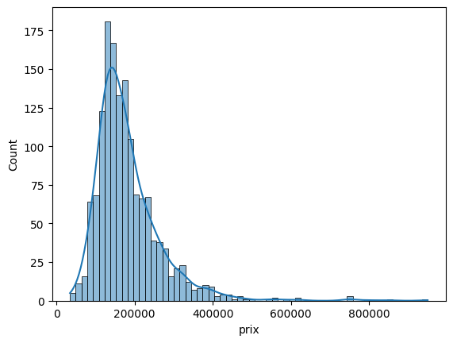
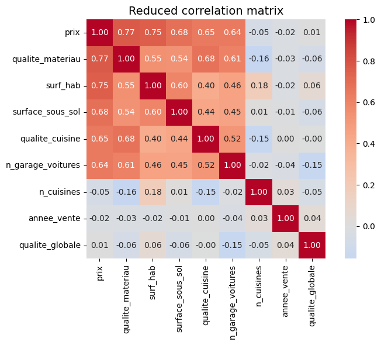
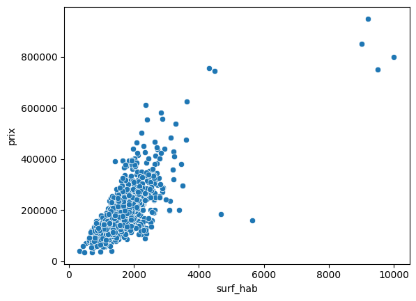
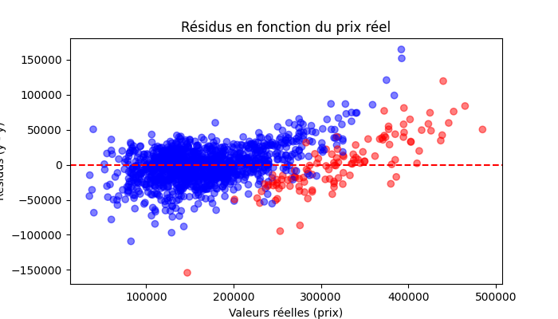

Elastic Net Regression on Housing Data
The company wants to understand how different home characteristics influence market prices. The goals are twofold: (1) develop a predictive model that estimates the selling price of a home, and (2) provide actionable insights to clients on which features or improvements can most effectively increase their home’s value.
Our dataset contains 1,465 entries with the following attributes:
| Column header | Description |
|---|---|
| surf_hab | surface habitable totale (sans sous-sol), en pieds carrés |
| qualite_materiau | qualité du matériau de la maison, échelle de 1 à 10 |
| surface_sous_sol | surface totale du sous-sol en pieds carrés |
| qualite_globale | qualité globale de la maison, échelle de 1 à 10 |
| n_garage_voitures | capacité du garage en nombre de voitures |
| n_toilettes | nombre de toilettes |
| n_cheminees | nombre de cheminées |
| n_pieces | nombre de pièces (sans compter les salles de bain) |
| n_cuisines | nombre de cuisines |
| n_chambres_coucher | nombre de chambres à coucher |
| annee_vente | année de vente de la maison |
| prix | prix de vente, en USD |
| type_toit | type de toit (1 pan, 2 pans, 4 pans, mansarde, plat) |
| type_batiment | type de bâtiment (individuelle, reconvertie, duplex, rangée, fin de rangée) |
| qualite_cuisine | qualité de la cuisine (excellente, bonne, moyenne, médiocre) |
| surface_jardin | surface du jardin, en pieds carrés |

The distribution of housing prices is highly skewed, with most properties concentrated around mid-range values (100,000–300,000). This means that the model will be more accurate in this central range, where it has many examples to learn from. However, for very expensive properties, which are rare in the dataset, the model will struggle more, as these outliers are underrepresented.

The reduced correlation matrix highlights that housing prices are strongly correlated with variables such as material quality, living area, basement size, kitchen quality, and the number of garages. These features are therefore key drivers of price. On the other hand, variables like the number of kitchens, the sale year, or the overall quality score show little to no correlation with price, suggesting they bring limited predictive power.

The relationship between housing price and key variables is generally linear. For example, as the living area increases, the price tends to rise proportionally. While some extreme cases deviate from this trend, most properties follow a clear linear pattern, which supports the use of regression-based models.
Based on the exploratory data analysis, a regression model was selected as the most appropriate starting point, since the relationships between key variables and housing prices were mostly linear. However, due to correlations between predictors (e.g. living area and basement size), a simple linear regression could lead to instability and overfitting. To address this, we applied an Elastic Net regression, which combines the strengths of Ridge (stability) and Lasso (feature selection). This approach ensures that the model remains both accurate and interpretable, focusing on the most relevant predictors.
Top contributing features (Elastic Net)
| Feature | Coefficient |
|---|---|
| Living area (surf_hab) | +20,425 |
| Material quality | +16,940 |
| Expensive × surface | +14,878 |
| Basement area | +14,167 |
| Kitchen quality | +11,562 |
| Building type: row house | −8,552 |
| Building type: individual | +7,634 |
| Flat roof | +6,851 |
| Garage capacity | +5,771 |
Interpretation: Larger living areas, better materials, and higher kitchen quality strongly increase the price, while some building types (e.g. row houses) decrease it.
Model performance (full dataset)
| Metric | Value |
|---|---|
| R² | 0.861 |
| RMSE | 26,471 |
| MAE | 19,419 |
Interpretation:
- The model explains ~86% of price variability.
- Average error is about 19k, which is reasonable compared to the typical price range.

This residual plot shows the difference between predicted and actual prices across the dataset. Most predictions (blue points) are centered close to zero, indicating good overall performance. However, for houses identified as high-end (red points), the model systematically underestimates the price. This suggests that the model captures mid-range properties well but struggles with luxury homes, which are less represented in the data.
The analysis highlights that certain features, such as kitchen quality and garage capacity, have a strong impact on property prices. This means that advising clients to improve the quality of their kitchen or to expand their garage could significantly increase the resale value of their homes.
At the same time, the model currently performs best on mid-range properties and has more difficulty capturing the dynamics of very expensive homes. With more data and further refinement, the model could be improved to better identify the drivers of high-end properties, making predictions more reliable across the entire market.